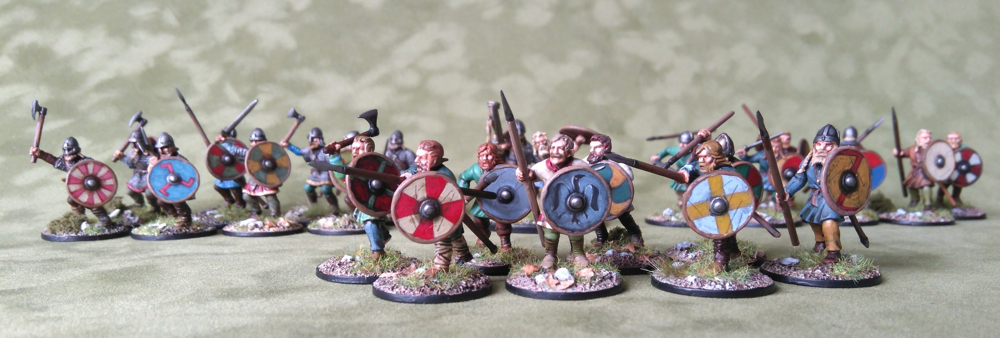

<mat-card>
    
</mat-card>
    <nav class="sticky-nav" ngStickyNav>
        <mat-card>

            <button mat-button [matMenuTriggerFor]="menu"><mat-icon>menu</mat-icon></button>
            <mat-menu #menu="matMenu">
                <button mat-menu-item>Strona główna</button>
                <button mat-menu-item>Zdjęcia i relacje</button>
                <button mat-menu-item>Gdzie gramy</button>
            </mat-menu>
            <span class="hide-on-mobiles">
                <button mat-button>Strona główna</button>
                <button mat-button>Zdjęcia i relacje</button>
                <button mat-button>Gdzie gramy</button>
            </span>
        </mat-card>
    </nav>
<p>łóąę</p>


